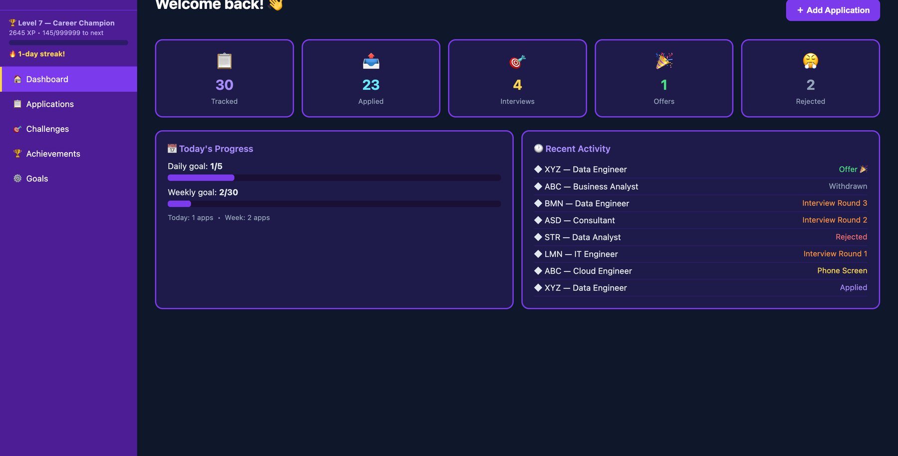
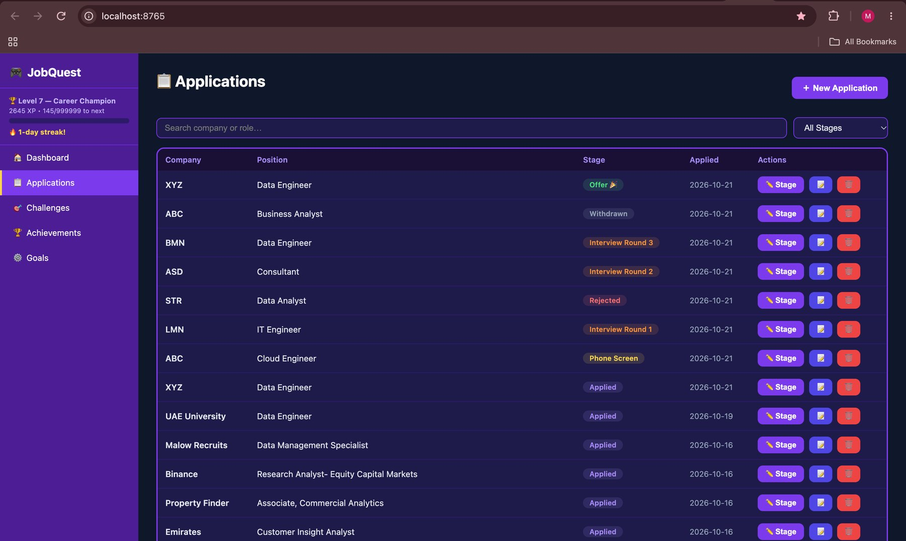
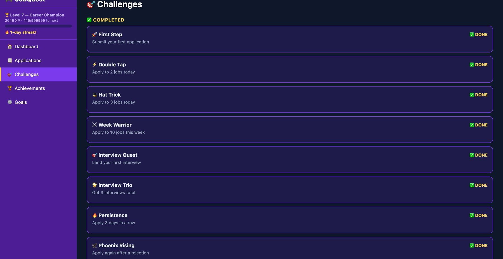
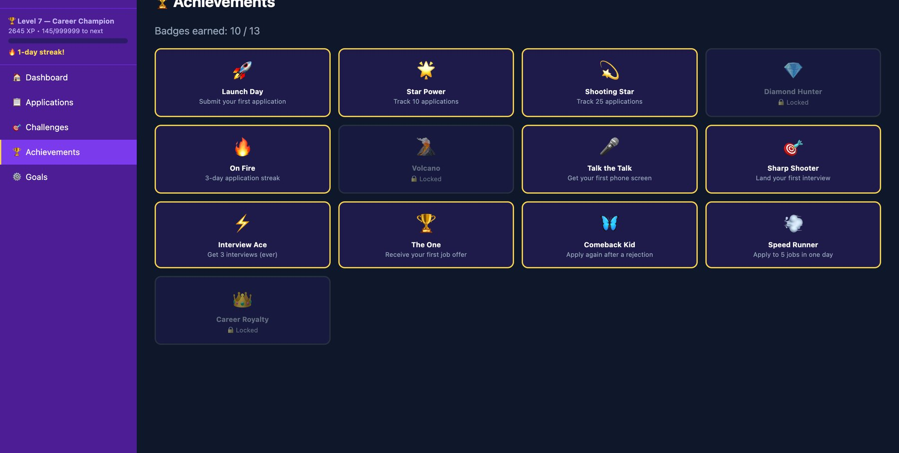
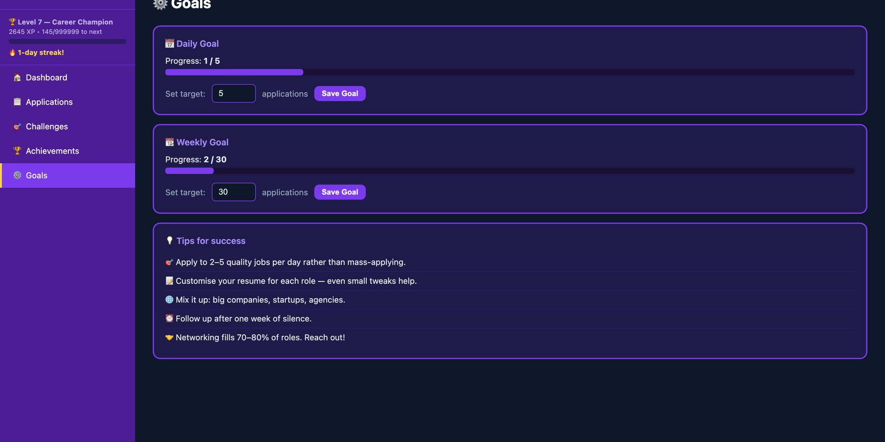
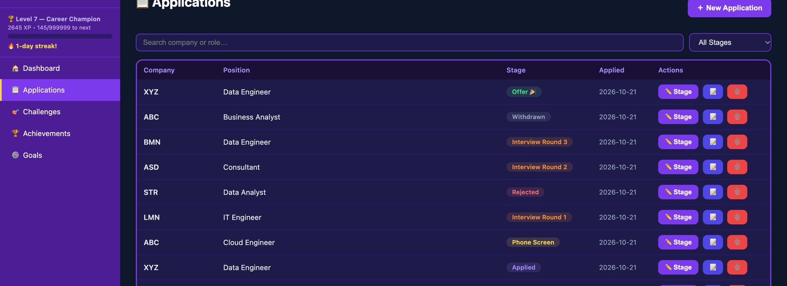
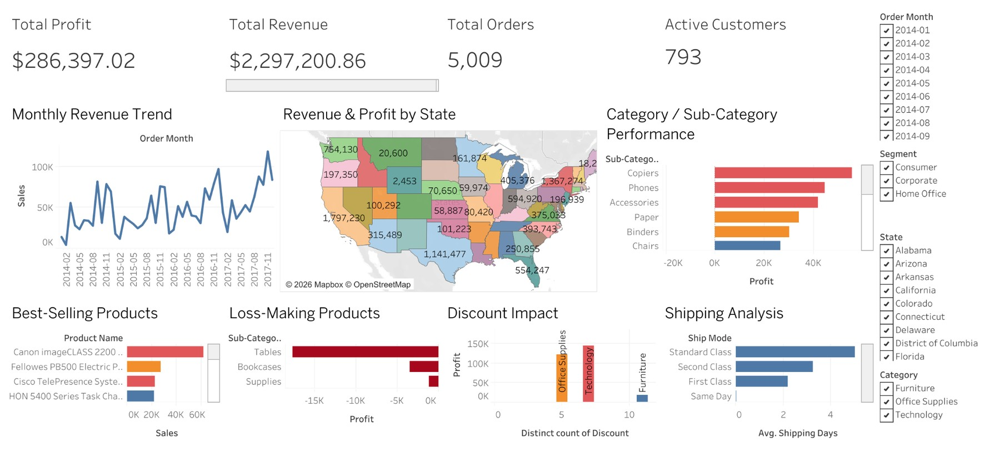
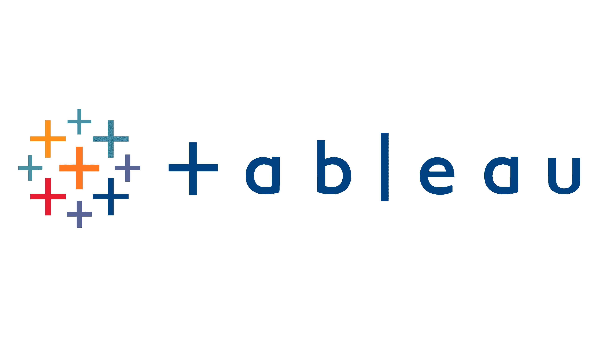
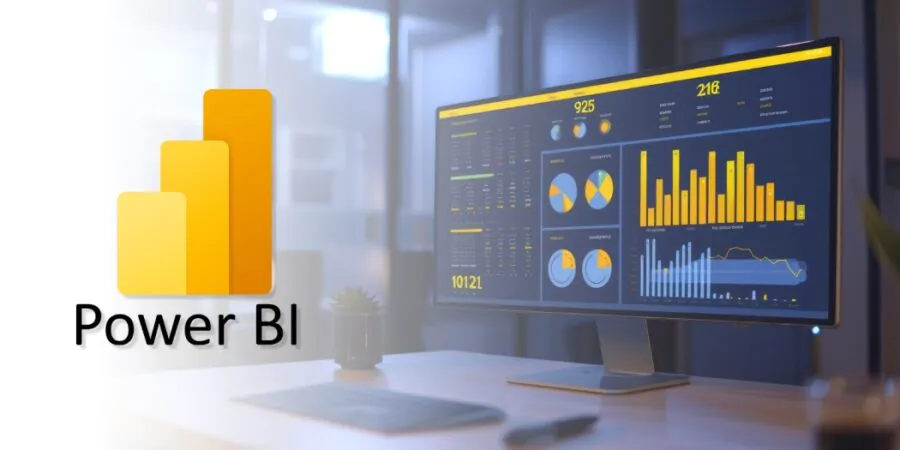

01
Data & Analytics
Working with structured data to validate, explore, report and communicate useful insights.
DATA · CLOUD · INFRASTRUCTURE · SOFTWARE
I'm Muzna — a technology professional with 5+ years of experience spanning enterprise IT, data operations, cloud platforms and practical software projects.
From keeping critical systems running to turning data into insight — I enjoy solving problems across the technology stack.
I bring together hands-on infrastructure support, cloud and data operations, analytical thinking and application development.
At Corvit Networks, I support data-center and enterprise environments, including Google infrastructure across three UAE sites, and have contributed to a Microsoft 365 migration involving more than 400 users. Earlier, at Tata Consultancy Services, I supported AWS-hosted workloads, SQL operations and reporting for an enterprise client.
Alongside my professional work, I build practical projects that help me explore data, automation and software — including Job Quest, a gamified job application tracker.
Explore my GitHub ↗A cross-functional foundation built through enterprise delivery, continuous learning and hands-on projects.
Working with structured data to validate, explore, report and communicate useful insights.
Supporting cloud-hosted workloads, data movement, scheduled operations and platform fundamentals.
Supporting enterprise systems, data-center operations, networking and end-user environments.
Building useful applications and automations with an emphasis on clear workflows and practical outcomes.
Corvit Networks · Dubai, UAE
Tata Consultancy Services · Bangalore, India
A selection of application development, analytics and data exploration work.

REAL APPLICATION SCREENSHOT · DEMO DATAA gamified job application tracker built with Python, JavaScript and SQLite. Organise applications, monitor progress, set daily and weekly goals, complete challenges, earn achievements and build consistent job-search habits.
The screenshots below show the working application with sample/dummy records, not personal job application data.
View source code on GitHub ↗





End-to-end analysis of a 20,000-record e-commerce dataset, covering Python and SQL data preparation, exploratory analysis, feature engineering and a simple churn/LTV model.
View repository ↗Analysed 7,043 telecom customers across 21 fields; identified 26.5% overall churn and compared churn patterns across contract types using Python and Tableau.
View repository ↗Explored global COVID-19 datasets using SQL Server and developed Tableau visualisations to examine trends and compare key measures.
Explore SQL projects ↗
An interactive Tableau dashboard analysing retail sales performance through headline KPIs, monthly revenue trends, state-level revenue and profit, category and sub-category performance, best- and loss-making products, discount impact and shipping analysis. Includes filters for order month, customer segment, state and category.
View Tableau Public profile ↗
A collection of dashboards and visual analytics work exploring data storytelling and business intelligence.
View Tableau profile ↗
Dashboard development and data visualisation projects, including a Data Professional Survey analysis.
View repository ↗Choose the CV that best matches the opportunity you're exploring.
I'm open to opportunities across data, cloud, infrastructure and software development, including relocation.